Построение таблиц истинности и логических схем
Цели
- Обобщить знания учащихся по теме: «Логические основы обработки информации»
- Формировать умения составления таблиц истинности и анализа функциональных схем
Инструменты:
- ОС Windows
- Браузер
-
logika.exe
Задание 1. Запишите информацию в конспект, используя навыки конспектирования (например, сокращая слова).
С помощью логических переменных и символов логических операций любое высказывание можно формализовать,то есть заменить логической формулой. (Записать на языке алгебры логики или записать в виде формулы)
Определение логической формулы:
|
Табли́ца и́стинности — это таблица, задающая логическую функцию.
ТИ - это таблица, с помощью которой устанавливается истинностное значение сложного высказывания при данных значениях входящих в него простых высказываний. В классической математической логике предполагается, что каждое простое (не содержащее логических связок) высказывание является либо истинным, либо ложным, но не тем и другим одновременно. Нам не известно, истинно или ложно данное простое высказывание, чтобы установить это, потребовалось бы обратиться к фактам действительности, но логика этого не делает. Однако мы знаем, что у высказывания имеется лишь две возможности - быть истинным либо быть ложным. Когда с помощью логических связок мы соединяем простые высказывания в сложное, встает вопрос: при каких условиях сложное высказывание считается истинным, а при каких - ложным? Для ответа на этот вопрос и служат таблицы.
В качестве примера рассмотрим высказывание "если я куплю яблоки или
абрикосы, то приготовлю фруктовый пирог". Это высказывание формализуется в виде (A v B)  C.
Такая же формула соответствует высказыванию "если Игорь знает
английский или японский язык, то он получит место переводчика".
C.
Такая же формула соответствует высказыванию "если Игорь знает
английский или японский язык, то он получит место переводчика".
Как показывает анализ формулы (A v B)  C, при
определённых сочетаниях значений переменных A, B и C она принимает значение "истина", а при некоторых других сочетаниях — значение "ложь" (разберите самостоятельно эти случаи). Такие формулы называются выполнимыми.
C, при
определённых сочетаниях значений переменных A, B и C она принимает значение "истина", а при некоторых других сочетаниях — значение "ложь" (разберите самостоятельно эти случаи). Такие формулы называются выполнимыми.
Некоторые формулы принимают значение "истина" при любых значениях
истинности входящих в них переменных. Таковой будет, например,
формула А v  ,
соответствующая высказыванию "Этот треугольник прямоугольный или
косоугольный". Эта формула истинна и тогда, когда треугольник
прямоугольный, и тогда, когда треугольник не прямоугольный. Такие
формулы называются тождественно истинными формулами или
тавтологиями. Высказывания, которые формализуются
тавтологиями, называются логически истинными высказываниями.
,
соответствующая высказыванию "Этот треугольник прямоугольный или
косоугольный". Эта формула истинна и тогда, когда треугольник
прямоугольный, и тогда, когда треугольник не прямоугольный. Такие
формулы называются тождественно истинными формулами или
тавтологиями. Высказывания, которые формализуются
тавтологиями, называются логически истинными высказываниями.
В качестве другого примера рассмотрим формулу А .  , которой соответствует, например,
высказывание "Катя самая высокая девочка в классе, и в классе есть
девочки выше Кати". Очевидно, что эта формула ложна, так как либо
А, либо
, которой соответствует, например,
высказывание "Катя самая высокая девочка в классе, и в классе есть
девочки выше Кати". Очевидно, что эта формула ложна, так как либо
А, либо  обязательно
ложно. Такие формулы называются тождественно ложными формулами
или противоречиями. Высказывания, которые формализуются
противоречиями, называются логически ложными высказываниями.
обязательно
ложно. Такие формулы называются тождественно ложными формулами
или противоречиями. Высказывания, которые формализуются
противоречиями, называются логически ложными высказываниями.
Если две формулы А и В одновременно, то есть при одинаковых наборах значений входящих в них переменных, принимают одинаковые значения, то они называются равносильными.
Равносильность двух формул алгебры логики обозначается символом "="
или символом " " Замена формулы другой, ей равносильной, называется равносильным преобразованием данной формулы.
" Замена формулы другой, ей равносильной, называется равносильным преобразованием данной формулы.
Задание 2. Внимательно ознакомтесь с материалом. Вопросы возникающие при изучении материала, ЗАПИСАТЬ в конспект.
По данной теме, вам надо написать проверочную в конце темы.
Запишите в конспект Последовательность построения таблицы истинности:
1. Подсчитать n — число переменных в выражении;
2. Подсчитать общее число логических операций и их порядок в выражении;
3. Установить последовательность выполнения логических операций с учётом скобок и приоритетов;
4. Определить число столбцов в таблице: число переменных + число операций;
5. Заполнить шапку таблицы, включив в неё переменные и операции в соответствии с последовательностью, установленной в п. 3 ;
6. Определить число строк в таблице (не считая шапки таблицы): m=2n ;
7. Выписать наборы входных переменных с учётом того, что они представляют собой целый ряд n -разрядных двоичных чисел от 0 до 2n−1 ( первые значения заполняют чередованием 0 и 1, второй столбик чередованием два 0 и две 1 и опять два 0 и две 1, третий столбик пишут четыре 0 и четыре 1, четветрый столбик восем 0 и восем 1);
8. Провести заполнение таблицы по столбцам, выполняя логические операции в соответствии с установленной последовательностью.
Для формулы, которая содержит две переменные, таких наборов значений переменных всего четыре:
(0, 0), (1, 0), (0, 1), (1, 1).
Если формула содержит три переменные, то возможных наборов значений переменных восемь:
Количество наборов для формулы с четырьмя переменными равно шестнадцати и т.д.
Удобной формой записи при нахождении значений формулы является таблица, содержащая кроме значений переменных и значений формулы также и значения промежуточных формул.
Примеры. 1
Составим таблицу истинности для формулы  ,
,
1. Две переменные x и y в выражении ;
| Переменные | |
2. Подсчитать общее число логических операций и их порядо в выражении 6;
3. Установить последовательность выполнения логических операций с учётом скобок и приоритетов;4. Определить число столбцов в таблице: число переменных + число операций 2+6=8;
| Переменные | Промежуточные логические формулы | Формула | |||||
5. Заполнить шапку таблицы, включив в неё переменные и операции в соответствии с последовательностью, установленной в п. 3 ;
| Переменные | Промежуточные логические формулы | Формула | |||||
6. Определить число строк в таблице x+y=2 значит n=2 тогда m=22 =4;
| Переменные | Промежуточные логические формулы | Формула | |||||
| Переменные | Промежуточные логические формулы | Формула | |||||
| 0 | 0 | ||||||
| 1 | 0 | ||||||
| 0 | 1 | ||||||
| 1 | 1 | ||||||
8. Провести заполнение таблицы по столбцам, выполняя логические операции в соответствии с установленной последовательностью.
| Переменные | Промежуточные логические формулы | Формула | |||||
| 0 | 0 | 1 | 0 | 0 | 1 | 1 | 1 |
| 1 | 0 | 0 | 0 | 1 | 0 | 0 | 1 |
| 0 | 1 | 1 | 1 | 1 | 0 | 1 | 1 |
| 1 | 1 | 0 | 0 | 1 | 0 | 0 | 1 |
Из таблицы видно, что при всех наборах значений переменных x и y формула
 принимает значение 1, то есть
является тождественно истинной.
принимает значение 1, то есть
является тождественно истинной.
2. Таблица истинности для формулы  :
:
| Переменные | Промежуточные логические формулы | Формула | ||||
| 0 | 0 | 0 | 1 | 1 | 0 | 0 |
| 0 | 1 | 1 | 0 | 0 | 0 | 0 |
| 1 | 0 | 1 | 0 | 1 | 1 | 0 |
| 1 | 1 | 1 | 0 | 0 | 0 | 0 |
Из таблицы видно, что при всех наборах значений переменных x и y
формула  принимает значение
0, то есть является тождественно ложной.
принимает значение
0, то есть является тождественно ложной.
3. Таблица истинности для формулы  :
:
| Переменные | Промежуточные логические формулы | Формула | ||||||
| 0 | 0 | 0 | 1 | 1 | 0 | 1 | 0 | 0 |
| 0 | 0 | 1 | 1 | 1 | 0 | 1 | 1 | 1 |
| 0 | 1 | 0 | 0 | 0 | 1 | 1 | 0 | 1 |
| 0 | 1 | 1 | 0 | 0 | 1 | 1 | 1 | 1 |
| 1 | 0 | 0 | 1 | 1 | 0 | 0 | 0 | 0 |
| 1 | 0 | 1 | 1 | 1 | 0 | 0 | 0 | 0 |
| 1 | 1 | 0 | 0 | 1 | 0 | 0 | 0 | 0 |
| 1 | 1 | 1 | 0 | 1 | 0 | 0 | 0 | 0 |
Из таблицы видно, что формула  в некоторых случаях принимает значение 1, а в некоторых — 0,
то есть является выполнимой.
в некоторых случаях принимает значение 1, а в некоторых — 0,
то есть является выполнимой.
Задание 2 . Запишите в конспект пример решения логической задачи
Постройте таблицу истинности логического высказывания и функциональную схему логического устройства для данной функции
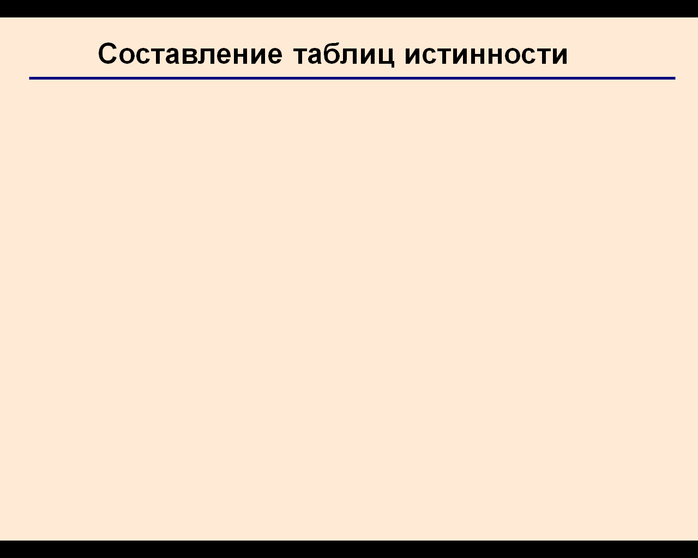
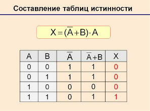
Уточним основные логические элементы компьютера
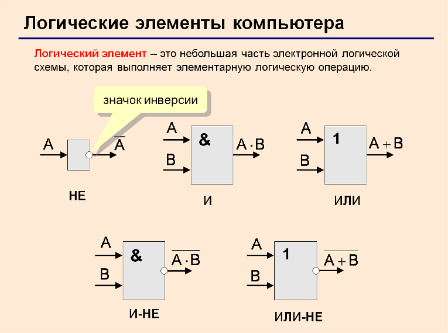
Запишите в конспект Правила построения логических схем:
1. Определить число логических переменных;
2. Определить количество базовых логических операций и их порядок;
3. Изобразить для каждой логической операции соответствующий ей логический элемент;
4. Соединить логические элементы в порядке выполнения логических операций.
Построим логическую схему для нашей функции
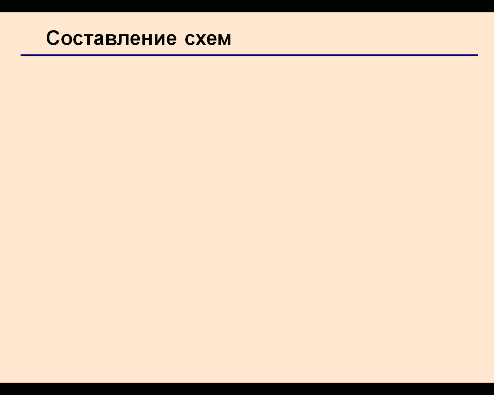
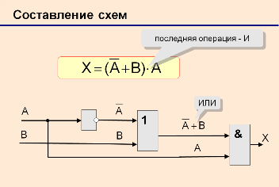
Задание 4. Постройте логические схемы операций Импликации и Эквиваленции
Импликацию можно выразить через дизъюнкцию и отрицание:
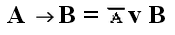
Эквиваленцию можно выразить через отрицание, дизъюнкцию и конъюнкцию:
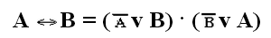
Пример решения

Тождественно истиная - это та функция которая всё время (при любых входных параметрах) принимает значение 1 или истина, тождественно ложная - которая принимает всё время значение 0 или ложь. Выполнимая - это та которая может принять и 0 и 1 в зависимости от входных параметров
| 1 вариант |
2 вариант |
| 3 вариант |
4 вариант |
| 5 вариант |
6 вариант |
| 7 вариант |
Номер по журналу 8 соответствует 1 варианту, номеру 9 второй вариант, далее определеите свой вариант сами. |
Пример решения логической задачи с тремя переменными
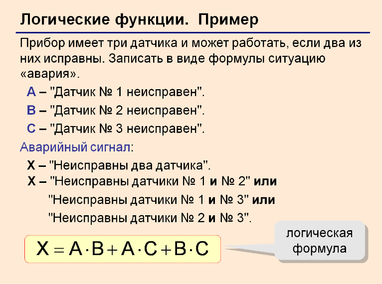
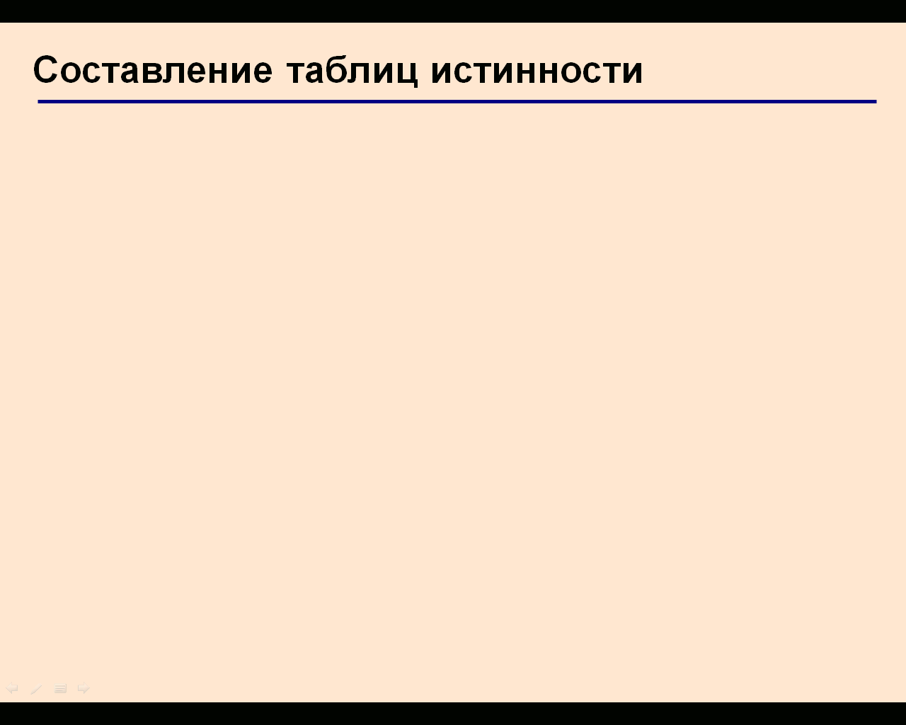
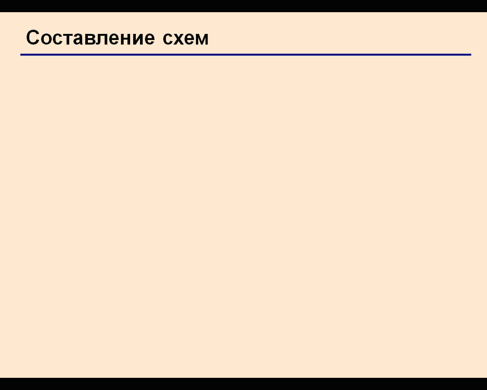
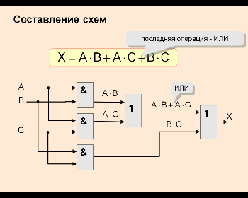
Дополнительные задания
НА 5 БАЛЛОВ
Задание Дана схема логического устройства для функции
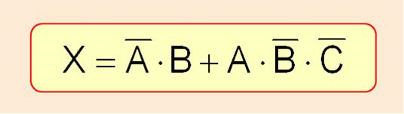
Самостоятельно составьте таблицу истинности для данной функции
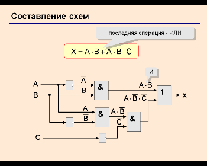
Бонус для тех, кто справился со своим вариантом Игра-тренажёр
Пример решения логической задачи с тремя переменными
Дополнительные задания
НА 5 БАЛЛОВ
Задание Дана схема логического устройства для функции
Самостоятельно составьте таблицу истинности для данной функции